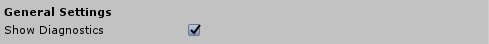

診断システム (Diagnostics System) の構成
診断システムプロファイルには、次の構成オプションが提供されます。
一般設定 (General Settings)

診断の表示
診断システムが設定された診断オプションを表示するかどうかを示します。
無効にすると、設定されたすべての診断オプションが非表示になります。
プログラムによる診断システムの制御
また、実行時に診断システムとプロファイラの可視性を切り替えることもできます。 たとえば、次のコードでは、診断システムとプロファイラを非表示にします。
if (MixedRealityServiceRegistry.TryGetService<IMixedRealityDiagnosticsSystem>(out var service))
{
service.ShowDiagnostics = false;
service.ShowProfiler = false;
}
Show Profiler （プロファイラの表示）

プロファイラの表示
ビジュアルプロファイラ (Visual Profiler) を表示するかどうかを示します。
Frame Sample Rate (フレームサンプルレート)
フレームレート計算用にフレームを収集する時間 (秒単位) 。範囲は 0 ~ 5 秒です。
Window Anchor (ウィンドウアンカー)
プロファイラウィンドウをビューポート (view port) のどの部分に固定するかを設定します。デフォルト値は下中央です。
Window Offset (ウィンドウオフセット)
ビューポート (view port) の中心からビジュアルプロファイラを配置するまでのオフセット。オフセットはウィンドウアンカー (Window Anchor)の方向です。
Window Scale (ウィンドウスケール)
プロファイラウィンドウ (profiler window) に適用されるサイズ乗数。たとえば、値を 2 に設定すると、ウィンドウのサイズが 2 倍になります。
Window Follow Speed (ウィンドウ追従スピード)
ビューポート (view port) 内の可視性を維持するためにプロファイラウィンドウを移動する速度。